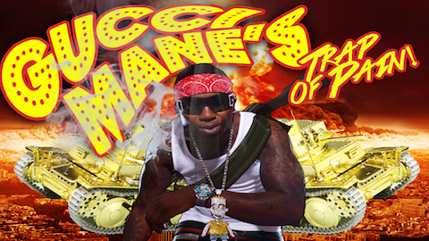

Günsquad
Android Studio/Java/XML
In a simulated shooter, the world is on the brink of peril. Command, customize, and upgrade your squad of ragtag soldiers and travel to various parts of the world, including Russia, Brazil, and the North Pole, to uncover the secrets of the beginning of WW3 and to fight to end it.
Trap of Pain
Unity/C#

Welcome to Gucci Mane's trap of pain! In this goofy shooter, you play as Gucci Mane's bodyguard and is tasked with protecting his domain from an unknown threat...zombies! Level up your character in-game, explore the humongous map, and survive as long as you can!
System Admin
Android/Java/XML

An Android app that lets the user change a variety of options, including volume sounds, alarms, and more, much like a standard Settings app on a phone.